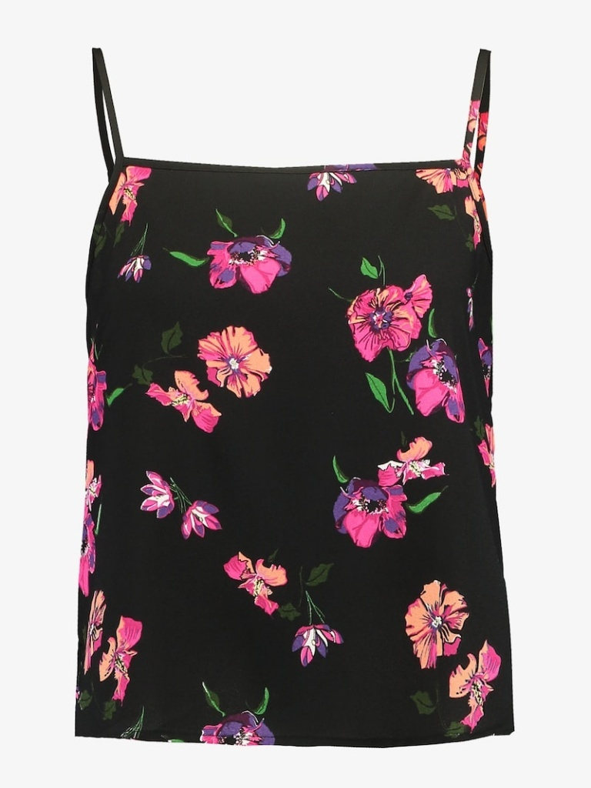
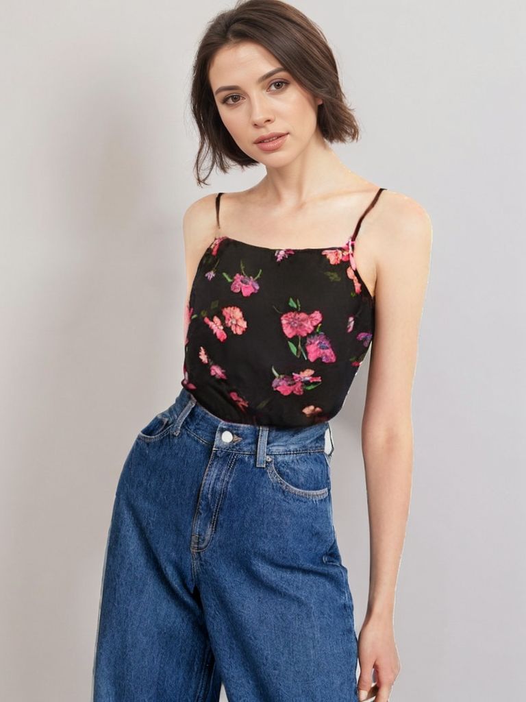

AI-Powered Software Tailored for Innovators
With over a decade of expertise Telepat is powering leading Silicon Valley startups and Fortune 500 companies with next gen software development.

02
AI Concepts & Software
- AI Strategy Development & Use Case Identification
- Mobile & Web Application Development
- Integration of Pre-Trained Models into existing Applications
- AI Model Fine-Tuning & Optimization for specific verticals

03
AI Visuals & Voice
- AI Product and e-Com Photography
- AI-Generated Video Animations and Commercials
- Autonomous, lifelike Virtual Personas for Social Media engagement
- Speech Recognition and Synthesis

04
Security & Infrastructure
Security & Infrastructure
for AI software
- AI Model Security Audits & Implementation of Security Solutions
- AI Compliance with AI Regulations & Data Security Standards
- Cloud Infrastructure Setup & AI Model Hosting Management
- Cloud-Based AI Solution Deployment
Our vision is to create innovative solutions that not only drive technological progress but also promote environmental stewardship and social responsibility.
SELECTED CLIENTS
T···Mobile
Microsoft
7 ProSiebenSat.1
VIASAT
RH
PagerDuty
HONDA
eightTV
TELEPAT
06
Use Case Example — AI Visuals
Digitally tailored collections
We enable brands and designers to create stunning virtual photoshoots effortlessly and for a fraction of current costs and production times. A single photo is enough for superior results.




Let's build what's next.
hello@telepat.io · telepat.io